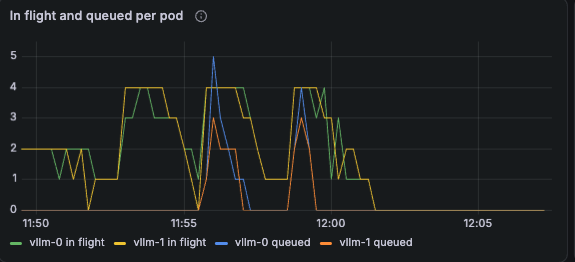
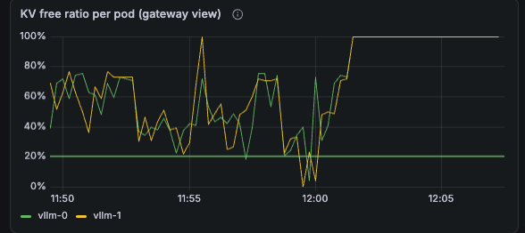
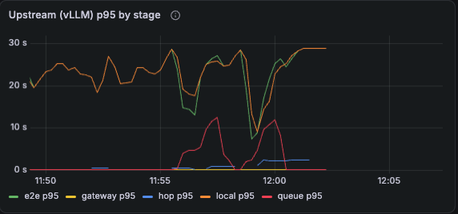
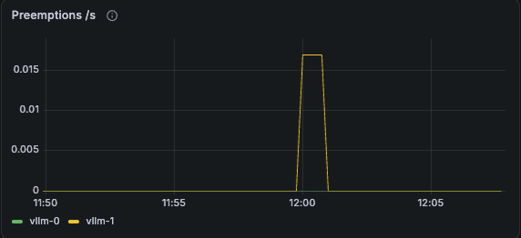

2 · Where the time went, per hop

In flight flattens at 4 on each worker at every level. Everything above the cap sits in the gateway queue with a deadline, not inside vLLM.

New runs are refused below 20% free. Runs already resident may continue to 5%. Free hugs the line because the pool is full of resident runs, which is the cap doing its job.

Queue p95 climbs to 10 s. Local, the engine's time, stays near 20 s throughout. Inter-token latency moved from 45 to 95 ms. The engine was never the slow hop.

Preemptions stayed at zero through 16 and appeared only at 32. Admission protected the engine up to the knee and was overrun past it. GPU utilisation read 100% from the first run to the last, so it cannot be the scaling signal. Power draw tracks load.
Gateway and vLLM dashboards, 11:50 to 12:05 on 10-12, levels 8, 16 and 32. The stacked "Request outcomes" panel shows the same three humps with refusals on top.
5